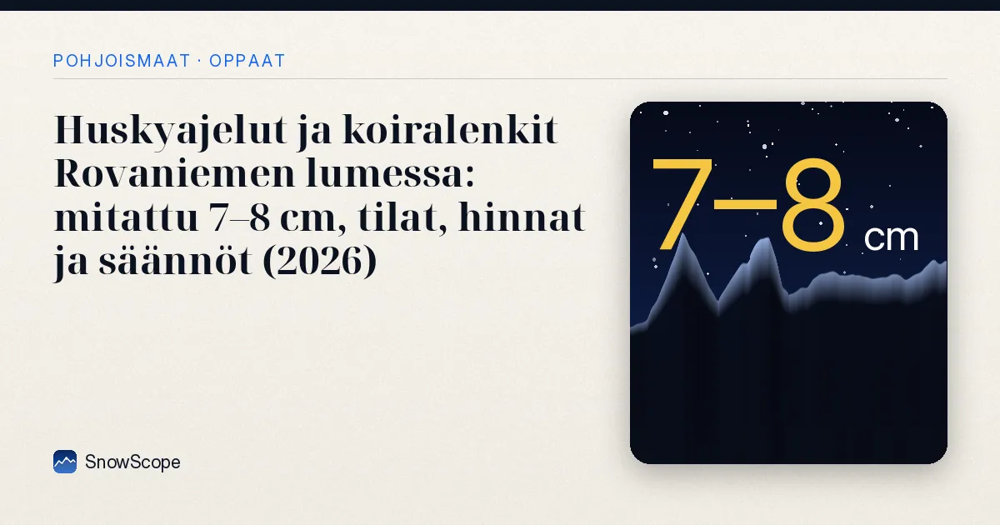

Huskyajelut ja koiralenkit Rovaniemen lumessa: mitattu 7–8 cm, tilat, hinnat ja säännöt (2026)
Rovaniemi heräsi ensimmäiseen oikeaan lumeen 13. marraskuuta. Lentokentän säähavaintoasema 186 m:n korkeudella mittasi 7 cm, kun taas alempi asema Apukassa kaupungin itäpuolella 105 m:n korkeudella mittasi 8 cm. Paljaan maan jälkeen marraskuun ensimmäisen viikon ajan lumipeite on säilynyt ohuena mutta vakaana, ja kaupunki avasi ensimmäisen talviuran, 450 m pitkän, samana päivänä. Kaupungin etelä puolella sijaitsevien koiratilain kannalta tämä merkitsee siirtymistä kärryreteistä kelkkaretkeille.
Katso kohteen Rovaniemi lumiennuste reaaliajassa SnowScope-sovelluksessaLumensyvyys, puuterihälytykset ja 3D-kartta, ilmaiseksi.

Milloin tilat käynnistyvät ja mitä ne maksavat
Kolme Rovaniemen koiravaljakko-operaattoria julkaisevat avautumispäivänsä ja hinnat avoimesti. Bearhill Husky tarjoaa itse ohjattavia kelkkaretkiä 30. marraskuusta 2026 alkaen; perheretkellä noin 6–10 km, jossa noin 45 minuuttia oman koiravaljakon ohjaamista, hinta on 196 EUR alkaen. Raitola, joka pitää myös poronlaumaa, tarjoaa opastetun 5 km koiravaljakosafarin joulukuusta puoliväliin huhtikuuta, kesto noin tunti, 144 EUR per aikuinen. Arctic Circle Husky Park järjestää lyhyitä vierailuja 1 km:n ratsastuksella 75 EUR per aikuinen.
Ennen virallista kelkkasesonkia monet tilat tarjoavat edelleen kärryretkiä tai lyhyempiä retkiä, joissa ammattilainen musketööri ohjaa valjakkoa. Jos suunnittelet matkaa marraskuun lopussa, kysy tilalta, minkä muodon se käyttää; vain 7–8 cm:n lumella joillakin päivillä voi olla yhä kärryretsoja kuin kelkkaretkiä. Alkukauden lumi voi muuttua sään mukaan, joten vahvista muutamaa päivää ennen varaamista.
Päivän pituus pienenee nopeasti napapiirillä
Rovaniemi sijaitsee napapiirillä, ja päivän pituus pienenee jyrkästi marraskuussa ja joulukuussa. 15. marraskuuta aurinko nousi 5 tunniksi 43 minuutiksi. 30. marraskuuta se kohoaa horisontin yläpuolelle alle 4 tunniksi. Joulukuussa aurinko nousee tuskin ollenkaan.
Jos haluat nähdä lumisen maiseman ja metsän, varaa koiratilan retki myöhäiselle aamupäivälle tai keskipäivälle. Monet kaupungin valaistut kuntoradat sopivat hyvin koirakävelyihin pimeässä, mutta ne eivät sovellu koiravaljakoretkeille. Hiihtouratakin valaistaan, kun ne avautuvat täysin, mutta koirat eivät saa käyttää niillä.
Säännöt koirille lumessa ja metsässä
Suomen jokaisen oikeus antaa kävelyläisille laajat vapaudet, mutta koirilla on erityisiä sääntöjä. Rakennetuissa alueilla koirat on pidettävä hirteen ympäri vuoden. Maaseudulla hirteen ottamisen sääntö astuu voimaan 1. maaliskuusta 19. elokuuta, joten nyt koirasi voi vaeltaa vapaasti ilman hihnaa, jos sinulla on lupa olla siellä. Suojelluilla alueilla, kuten kansallispuistoissa, pidä koirasi aina hirteen.
Rovaniemi on porotalouden alue. Poron lähestyminen koiran kanssa – jopa valokuvan vuoksi – on kiellettyä ja voi pelästyttää lauman. Kunnioita esteitä ja varoitusmerkkejä teillä, joissa laumat ylittävät.
Missä antaa koirasi juosta turvallisesti
Kaupungilla on kaksi aidattua koirapuistoa, joissa koirasi voi leikkiä ilman hihnaa ilman huolta liikenteestä tai poroista. Lainaanpuistossa on yöllinen valaistus, mikä on hyödyllinen pimeillä viikoilla. Ounasrinne sijaitsee metsän keskellä ja vetoaa koiriin, jotka pitävät puista ja varjosta.
Koirat eivät saa käyttää alueella groomatuilla hiihtourilla. Sääntö koskee myös kävelyläisiä: kun uratakin avautuvat täysin, pysy pois niistä, jotta hiihtäjillä on selkeä polku. Jotkin kaupungin kuntoradat ovat valaistuja ja riittävän leveitä sekä koirille että talvikävelijöille, joten käytä niitä sen sijaan.
Pukeutuminen miinuslämpöihin
Alkukauden lumi tulee usein kylmän ilman kanssa, ja Rovaniemen sijainti merkitsee sitä, että talven lämpötilat laskevat nopeasti ja pysyvät matalina. Lyhytkarvaisten koirien kylmä tuntuu yhtä paljon kuin ihmisillä. Jos kävelet omaa koiraasi kaduilla tai kaupungissa, harkitse koiran turkkia lämpötiloissa nollan alapuolella.
Katuille levitetty suola ja hiekka voivat ärsyttää tassujen. Huuhtele koirasi tassuista sauvisen kävellyn jälkeen, tai käytä tassujen pesupistettä, jos kaupunki rakentaa sellaisen. Pitkäkarvaiset rodut kestävät kylmää paremmin, mutta jopa ne tarvitsevat suojaa ja lämpöä sisälle tullessa.
Vinkkejä laskijoille
- Varaa koiratilan retki muutamaa päivää etukäteen ja vahvista muoto: kärryt tai kelkka. 7–8 cm:n lumella sään muutokset voivat vaikuttaa siihen, kumpaa käytetään.
- Jos vierailet marraskuun lopussa, suunnittele koiratilan retket päivällä, kun on vielä päivänvaloa nähdä lumi ja puut.
- Käytä kahta aidat tu koirapuistoa – Lainaanpuistoa (valaistua) ja Ounasrinetta (metsä) – antaaksesi koirallesi juosta vapaasti ilman vaaraa porolaumoille tai liikenteelle.
- Pidä omaa koiraasi hirteen rakennetuissa alueilla ympäri vuoden, ja lähellä mitään porovaroitusmerkkejä tai esteitä. Kansallispuistot ja suojelut alueet vaativat myös hihnaa.
- Tuo koiran turkki lämpötiloissa nollan alapuolella ja huuhtele koirasi tassuista sauvoisen kaupunkikävellyn jälkeen.
Näistä luvuista
Hiihtokeskusten lumensyvyydet ovat syvin lumi keskuksen ylärinteillä näytettynä päivänä; ne ovat arvioita alueelle, eivät mittaus yhdessä pisteessä. Ennusteet voivat muuttua. Lue aina virallinen lumivyöryennuste ennen rinteiden ulkopuolelle lähtöä.
Viittaa tähän raporttiin
Tutkimukseen, opetukseen tai mediaan: luvut ja kaaviot ovat vapaasti käytettävissä CC BY 4.0 -lisenssillä tällä lähdeviitteellä.
SnowScope (2026), Huskyajelut ja koiralenkit Rovaniemen lumessa: mitattu 7–8 cm, tilat, hinnat ja säännöt (2026), https://snowscope.app/blog/fi/2026/11/rovaniemi-husky-rides-dog-walks-snow-guide-2026.html, luettu 2026-11-14
SnowScope (Atlas Labs). (2026, November 14). Huskyajelut ja koiralenkit Rovaniemen lumessa: mitattu 7–8 cm, tilat, hinnat ja säännöt (2026). SnowScope snow reports. https://snowscope.app/blog/fi/2026/11/rovaniemi-husky-rides-dog-walks-snow-guide-2026.html
BibTeX
@misc{snowscope2026rovaniemihuskyridesdogwa,
author = {{SnowScope (Atlas Labs)}},
title = {Huskyajelut ja koiralenkit Rovaniemen lumessa: mitattu 7–8 cm, tilat, hinnat ja säännöt (2026)},
year = {2026},
month = nov,
howpublished = {\url{https://snowscope.app/blog/fi/2026/11/rovaniemi-husky-rides-dog-walks-snow-guide-2026.html}},
note = {Published 2026-11-14 19:39 UTC; accessed 2026-11-14}
}· CC BY 4.0 · Menetelmät, data ja työkalut →
Seuraa: Rovaniemi
Ilmainen: viesti, kun uutta lunta on tulossa, ja ennuste joka aamu.